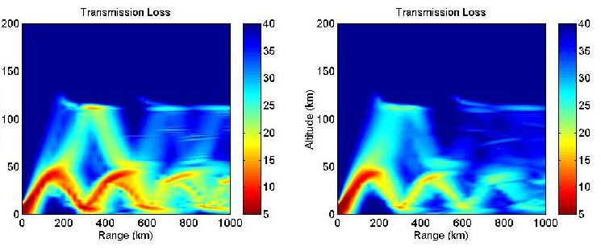

The transmission loss as a function of range and depth plotted in Fig. 9 clearly shows the convergence zones.
Les pertes de transmission en fonction de la distance et de la profondeur tracées sur la Fig. 9 mettent clairement en évidence les zones de convergence.
Observation: A classical extra-attenuation due to shock formation is clearly visible in the nonlinear case compared to the linear reference.
Observation : Une atténuation supplémentaire classique, due à la formation de chocs, est clairement visible dans le cas non-linéaire par rapport à la référence linéaire.

Fig. 9: Transmission Losses (dB scale) for linear (left) and nonlinear (right) propagation Fig. 9 : Pertes de Transmission (échelle en dB) pour la propagation linéaire (gauche) et non-linéaire (droite)